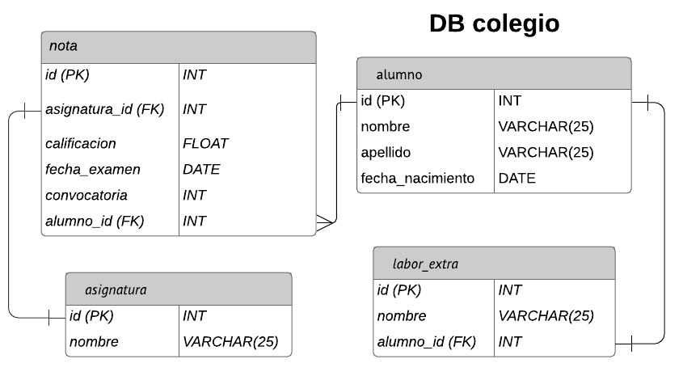
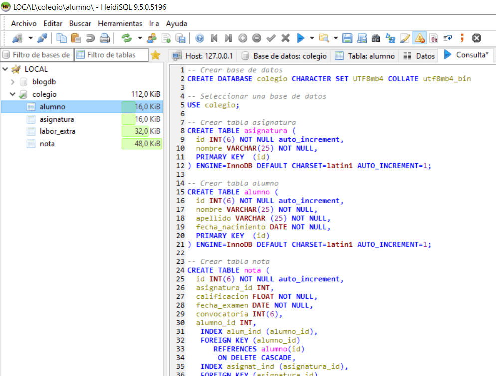

Símbolos
Los símbolos son las unidades sintácticas básicas de SQL. Un símbolo es una secuencia de uno o varios caracteres.
Un símbolo no puede contener caracteres en blanco, a menos que sea una constante de tipo serie o un identificador delimitado, que pueden contener blancos.
Los símbolos se clasifican en ordinarios y delimitadores:
- Un símbolo ordinario es una constante numérica, un identificador ordinario, un identificador del lenguaje principal o una palabra clave. Ejemplos
1 .1 +2 SELECT E 3
- Un símbolo delimitador es una constante de tipo serie, un identificador delimitado, un símbolo de operador o cualquier carácter especial mostrado en los diagramas de sintaxis. Un signo de interrogación también es un símbolo delimitador cuando actúa como marcador de parámetro.
, 'serie' "fld1" = .
Espacios
Un espacio es una secuencia de uno o varios caracteres en blanco. Los símbolos que no son constantes de tipo serie ni identificadores delimitados no deben incluir ningún espacio. Los símbolos pueden ir seguidos de un espacio. Cada símbolo ordinario debe ir seguido por un espacio o por un símbolo delimitador si lo permite la sintaxis.
Comentarios
Los comentarios de SQL son compuestos (empiezan por /* y finalizan por */) o simples (empiezan por dos guiones consecutivos y finalizan con el final de línea). Las sentencias de SQL estático pueden incluir comentarios SQL o del lenguaje principal. Se pueden especificar comentarios dondequiera que se pueda especificar un espacio, excepto dentro de un símbolo delimitador o entre las palabras clave EXEC y SQL.
Sensibilidad a mayúsculas y minúsculas
Los símbolos pueden incluir letras minúsculas, pero las letras minúsculas de un símbolo ordinario se convierten a mayúsculas, excepto en las variables del lenguaje principal en C, que tienen identificadores sensibles a las mayúsculas y minúsculas. Los símbolos delimitadores no se convierten nunca a mayúsculas. Por lo tanto, la sentencia:
select * from EMPLOYEE where lastname = 'Smith';
después de la conversión, es equivalente a:
SELECT * FROM EMPLOYEE WHERE LASTNAME = 'Smith';
Las letras alfabéticas de múltiples bytes no se convierten a mayúsculas. Los caracteres de un solo byte (de la "a" a la "z") sí se convierten a mayúsculas.
Sintaxis
Cláusulas SQL
Como una frase, una instrucción SQL tiene cláusulas. Cada cláusula realiza una función de la instrucción SQL. Algunas cláusulas son necesarias en una instrucción SELECT. En la siguiente tabla, se enumeran las cláusulas SQL más comunes.
- Cláusula SQL: SELECT
Función: Muestra una lista de los campos que contienen datos de interés.
Obligatorio: Sí - Cláusula SQL: FROM
Función: Muestra las tablas que contienen los campos de la cláusula SELECT.
Obligatorio: Sí - Cláusula SQL: WHERE
Función: Especifica los criterios de campo que cada registro debe cumplir para poder ser incluido en los resultados.
Obligatorio: No - Cláusula SQL: ORDER BY
Función: Especifica la forma de ordenar los resultados.
Obligatorio: No - Cláusula SQL: GROUP BY
Función: En una instrucción SQL que contiene funciones de agregado, muestra los campos que no se resumen en la cláusula SELECT.
Obligatorio: Solo si están estos campos - Cláusula SQL: HAVING
Función: En una instrucción SQL que contiene funciones de agregado, especifica las condiciones que se aplican a los campos que se resumen en la instrucción SELECT.
Obligatorio: No
Términos de SQL
Cada cláusula SQL se compone de términos, comparables a elementos de la oración. En la siguiente tabla, se enumeran los tipos de términos de SQL.
- Término de SQL: identificador
Elemento de la oración comparable: sustantivo
Definición: Nombre que se usa para identificar un objeto de la base de datos, como el nombre de un campo.
Ejemplo: Clientes.[Número de teléfono] - Término de SQL: operador
Elemento de la oración comparable: verbo o adverbio
Definición: Palabra clave que representa o modifica una acción.
Ejemplo: AS - Término de SQL: constante
Elemento de la oración comparable: sustantivo
Definición: Valor que no cambia, como un número o un valor nulo (NULL).
Ejemplo: 42 - Término de SQL: expresión
Elemento de la oración comparable: adjetivo
Definición: Combinación de identificadores, operadores, constantes y funciones que se evalúa como un valor único.
Ejemplo: > = Productos.[Precio por unidad]
Cláusula SELECT
SELECT [E-mail Address], Company
Esta es la cláusula SELECT. Se compone de un operador (SELECT) seguido de dos identificadores ([Dirección de correo electrónico] y Empresa).
Si un identificador contiene espacios o caracteres especiales (como "Dirección de correo electrónico"), se debe escribir entre corchetes.
Una cláusula SELECT no tiene que mencionar las tablas que contienen los campos y no puede especificar las condiciones que deben cumplir los datos que se van a incluir.
La cláusula SELECT siempre aparece antes que la cláusula FROM en una instrucción SELECT.
Cláusula FROM
FROM Contacts
Esta es la cláusula FROM. Se compone de un operador (FROM) seguido de un identificador (Contactos).
Una cláusula FROM no enumera los campos que se van a seleccionar.
Cláusula WHERE
WHERE City="Seattle"
Esta es la cláusula WHERE. Se compone de un operador (WHERE) seguido de un identificador (Ciudad="Seattle").
Nota: A diferencia de las cláusulas SELECT y FROM, la cláusula WHERE no es un elemento obligatorio en una instrucción SELECT.
Ordenar los resultados: ORDER BY
Una cláusula ORDER BY contiene una lista de los campos que quiere usar para ordenar, en el mismo orden en el que quiere aplicar las operaciones de ordenación.
Por ejemplo, suponga que quiere ordenar los resultados por el valor del campo Empresa en orden descendente y, en caso de que haya registros con el mismo valor para Empresa, quiere ordenarlos además por el valor indicado en el campo Dirección de correo electrónico en orden ascendente. La cláusula ORDER BY podría ser similar a la siguiente:
ORDER BY Company DESC, [E-mail Address]
Trabajar con datos resumidos: GROUP BY y HAVING
A veces quiere trabajar con datos resumidos, como las ventas totales en un mes o los elementos más caros de un inventario. Para ello, aplique una función de agregado a un campo en la cláusula SELECT. Por ejemplo, si quiere que la consulta muestre el recuento de las direcciones de correo electrónico enumeradas de cada empresa, la cláusula SELECT podría ser similar a la siguiente:
SELECT COUNT([E-mail Address]), Company
Las funciones de agregado que puede usar dependen del tipo de datos que haya en el campo o la expresión que quiera usar.
Especificar campos que no se usan en una función de agregado: Cláusula GROUP BY
Al usar funciones de agregado, normalmente debe crear también una cláusula GROUP BY. Una cláusula GROUP BY enumera todos los campos a los que no se aplica una función de agregado. Si aplica funciones de agregado a todos los campos en una consulta, no tendrá que crear la cláusula GROUP BY.
Una cláusula GROUP BY va inmediatamente después de la cláusula WHERE, o la cláusula FROM si no hay ninguna cláusula WHERE. Una cláusula GROUP BY enumera los campos tal y como aparecen en la cláusula SELECT.
Por ejemplo, siguiendo con el ejemplo anterior, si la cláusula SELECT aplica una función de agregado a [Dirección de correo electrónico] pero no a Empresa, la cláusula GROUP BY sería similar a la siguiente:
GROUP BY Company
Limitar los valores de agregado mediante los criterios de agrupación: cláusula HAVING
Si quiere usar criterios para limitar los resultados, pero el campo al que quiere aplicar los criterios se usa en una función de agregado, no puede usar una cláusula WHERE. En su lugar, use una cláusula HAVING. Una cláusula HAVING funciona como una cláusula WHERE, pero se usa para los datos agregados.
Por ejemplo, suponga que usa la función COUNT (que devuelve un número de filas) con el primer campo de la cláusula SELECT:
SELECT COUNT([E-mail Address]), Company
Si quiere que la consulta restrinja los resultados según el valor de esa función COUNT, no puede usar un criterio para ese campo en la cláusula WHERE. En su lugar, coloque los criterios en una cláusula HAVING. Por ejemplo, si solo quiere que la consulta devuelva filas si hay más de una dirección de correo electrónico asociada a la empresa, la cláusula HAVING podría ser similar a la siguiente:
HAVING COUNT([E-mail Address])>1
Esqueleto de los programas
La estructura básica de una expresión SQL consiste en tres cláusulas: select, from y where.
La cláusula select corresponde a la operación proyección del álgebra relacional. Se usa para listar los atributos deseados del resultado de una consulta
La cláusula from corresponde a la operación producto cartesiano del álgebra relacional. Lista las relaciones que deben ser analizadas en la evaluación de la expresión.
La cláusula where corresponde al predicado selección del álgebra relacional. Es un predicado que engloba a los atributos de las relaciones que aparecen en la cláusula from.
Una consulta típica en SQL tiene la forma
select A1, A2,…, An from r1, r2,…, rm where P
Cada Ai representa un atributo, y cada ri una relación.
P es un predicado. La consulta es equivalente a la expresión del álgebra relacional
Π A1, A2,…, An (σP (r1 × r2 ×… × rm ))
Aplicación a descargar para editar y ejecutar
SQL Server Management Studio (SSMS) es un entorno integrado para administrar cualquier infraestructura de SQL, desde SQL Server hasta Azure SQL Database. SSMS proporciona herramientas para configurar, monitorear y administrar instancias de SQL Server y bases de datos.
Paradigma
SQL entra a la categoría de lenguaje multiparadigma.
Ejemplo
Se ilustran imágenes de planeación y creación de bases de datos en SQL.

